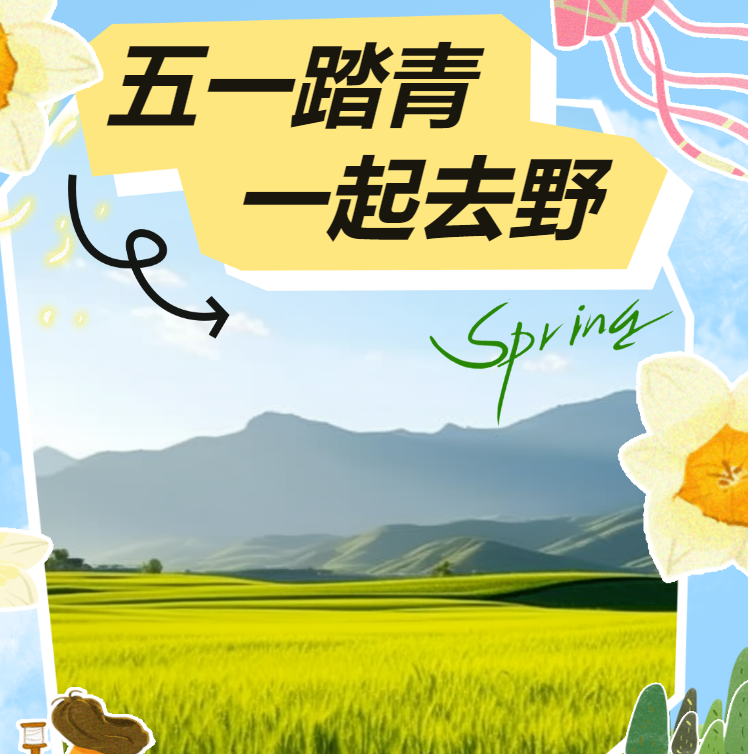

尽情撒欢！邂逅玉华春色，与孩子一起嗨翻大自然！

在蓝天白云下 与风筝共舞 欣赏春季美景 感受自由畅快的心情
浸润书香的故京驿 让心灵的独白在此刻绽放 阳光透过落地窗照到椅子上 明亮且直接地勾勒出 惬意生活该有的画面
玉华宫亲子石头彩绘DIY 带着孩子来玉华宫 画一块独一无二的石头 利用石头本身的形状、质地、纹理 让孩子感受自由创作的美妙 把一块普通的石头 经过手工石头画的制作 立即变成美美的艺术品
远离喧嚣 独享一隅 这里还有美食等你邂逅 就餐环境雅致、舒适 食材用料讲究、味道鲜美 速来解锁吧